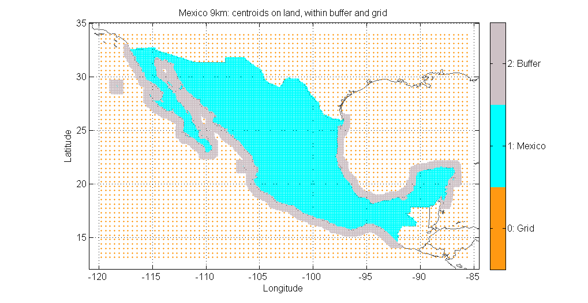
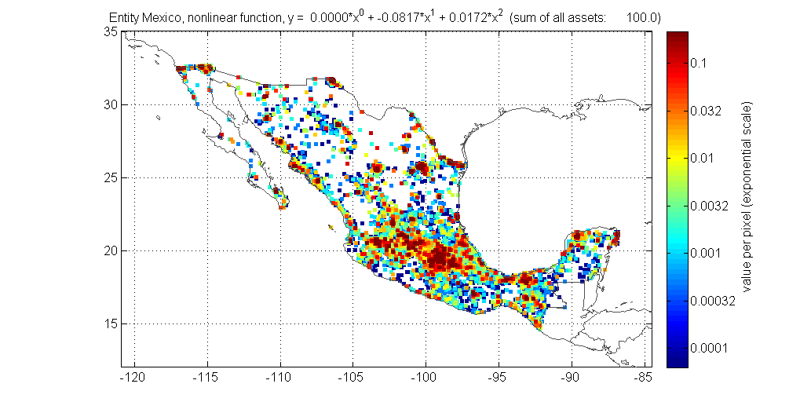
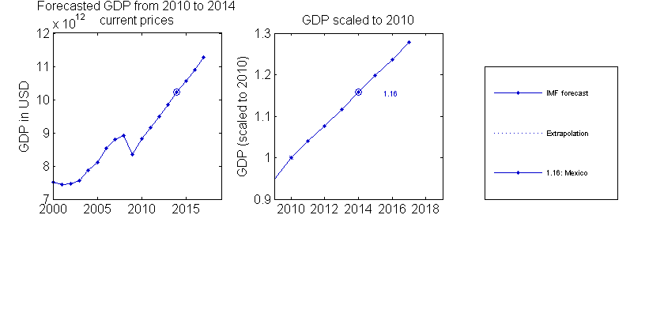
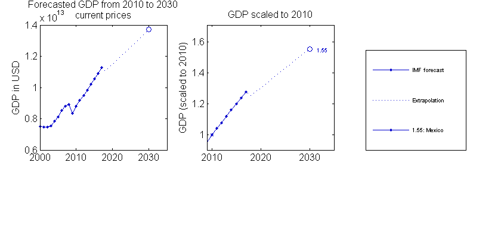
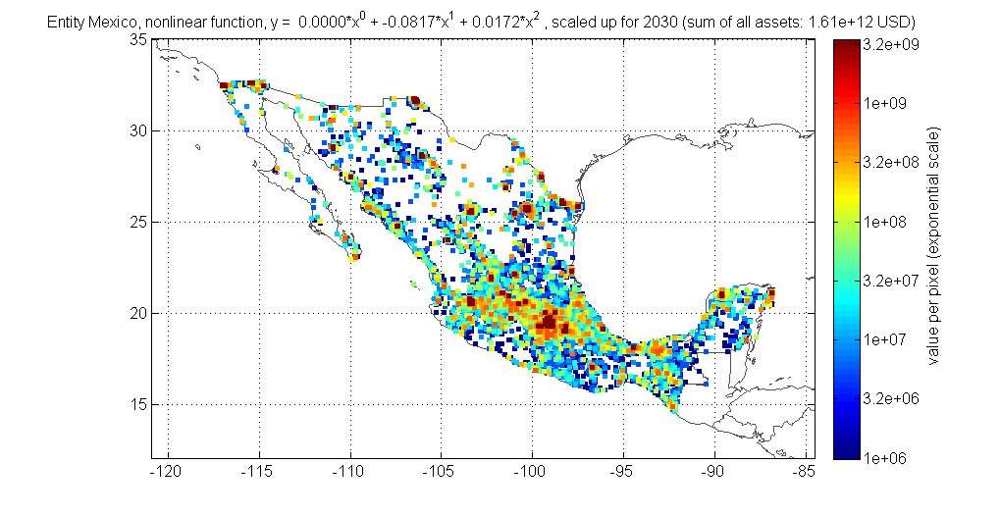

Contents
function [centroids, entity, entity_forecast] = climada_create_GDP_entity(country_name, polygon)
create a portfolio for a specific country, consisting of - centroids (mat) - base entity (assets sum up to 100 for a given country, mat and xls-file), intermediary step only, entity_base is not an output - entity (based on GDP today (e.g. 2014) and future GDP projection (e.g. 2030) NAME: climada_create_GDP_entity_all PURPOSE: create centroids and entity for a specific country, distribute assets and value according to night light intensities and scale up to match GDP today and a future scenario CALLING SEQUENCE: [centroids entity entity_forecast] = climada_create_GDP_entity(country_name, polygon) EXAMPLE: [centroids entity entity_forecast] = climada_create_GDP_entity [centroids entity entity_forecast] = climada_create_GDP_entity('Mexico') INPUTS: none OUTPUTS: centroids : a structure with fields centroid_ID, Latitude, Longitude, onLand, country_name, comment for each centroid entity : a structure with fields assets, damagefunctions, measures, discount. Assets values are based on night light intensity and scaled up to todays GDP (e.g. 2014) entity_forecast: entity strucure with values scaled to a future GDP scenario MODIFICATION HISTORY: Lea Mueller, muellele@gmail.com, 20140206
%- if ~exist('country_name', 'var'), country_name = [] ; end
set the parameters according to your needs
asset_resolution_km = 10; year_start = 2014; year_forecast = 2030; check_figure = 1; check_printplot = 0; check_for_groups = 0; hollowout = 0; save_on_entity_centroids = 1; night_light = ''; pp = ''; borders = ''; border_mask = ''; GDP = '';
create entity_100 (all values add up to 100 within the specified country) and create the centroids on the required resolution
[centroids_ori, entity_base] = climada_create_centroids_entity_base(country_name, asset_resolution_km, hollowout,... check_for_groups,night_light, pp, borders, border_mask, ... check_figure, save_on_entity_centroids);
0) a) Load world borders including regions 0) b) Load border masks... done *** Mexico on roughly 10 km *** saved 1 mat-file in folder \\CHRB1065.CORP.GWPNET.COM\homes\X\S3BXXW\Documents\lea\climada_test_environment\climada_additional\GDP_entity\data\night_light_2010_10km.mat Transform night lights to values (nonlinearly or linearly) y = 0.0000*x^0 + -0.0817*x^1 + 0.0172*x^2 Distribute values according to night lights within Mexico on a 10 km resolution 1) Downscale distributed values to ~10km ... Requested resolution (9 km) corresonds already to input matrix (9.26 km) (exactly ~9km) done 2) Create centroids for Mexico on a ~9 km resolution a) Create buffer of ~50km b) Select entire country (hollowout is set to 0) Requested resolution (9 km) corresonds already to input matrix (9.26 km) --> 36681 centroids (8692 on land and within buffer, 2891 outside) d) Save centroids in \\CHRB1065.CORP.GWPNET.COM\homes\X\S3BXXW\Documents\lea\climada_test_environment\climada\data\system\centroids_Mexico_9km_ 3) Create base entity a) Read from excel, entity without assets (damagefunctions, measures, discount) ... WARN: no damagefunctions data read, Attempt to reference field of non-structure array. entity saved as mat-file in \\CHRB1065.CORP.GWPNET.COM\homes\X\S3BXXW\Documents\lea\climada_test_environment\climada_additional\GDP_entity\data\entity_global_without_assets.mat b) Take assets from distributed values matrix c) Encode assets to centroids d) Save entity_base in \\CHRB1065.CORP.GWPNET.COM\homes\X\S3BXXW\Documents\lea\climada_test_environment\climada\data\entities\entity_Mexico_base_-0817x1_0172x2_9km_ e)Save entity as excel-file - Assets sheet - Damagefunctions sheet - Measures sheet - Discount sheet Save entity as xls file \\CHRB1065.CORP.GWPNET.COM\homes\X\S3BXXW\Documents\lea\climada_test_environment\climada\data\entities\entity_Mexico_base_-0817x1_0172x2_9km_.xls 
scale up entity_100 to match GDP of year_start
entity = climada_entity_GDP(entity_base, GDP, year_start , centroids_ori, borders, check_figure, check_printplot);
Step 1: Base entity to GDP 2010 (latest year of available GDP information) Read GDP and save as mat-file Assets are all encoded to valid centroids. GDP for Mexico in 2010 is 1.036e+12 USD (current) Entity assets covers 100.0% of Mexico, i.e. GDP for entire Mexico in 2010 is 1.036e+12 USD Step 2: Entity based on GDP 2010 to entity based on GDP 2014 Assets are all encoded to valid centroids. 25098 centroids are within Mexico Entity assets "entity scaled with factor 10358708802.424" scaled from 2010 to 2014 with average scale up factor 1.16 Entity assets sum is 1.201e+12 USD
scale up entity_100 to match GDP of year_forecast
entity_forecast = climada_entity_GDP(entity_base, GDP, year_forecast, centroids_ori, borders, check_figure, check_printplot); if ~exist('polygon', 'var'), polygon = [] ; end if ~isempty(polygon) if numel(polygon) == 1, polygon = []; end [centroids, entity] = climada_cut_out_GDP_entity(entity,centroids_ori,polygon); [c, entity_forecast] = climada_cut_out_GDP_entity(entity_forecast,centroids,polygon); else centroids = centroids_ori; end
Step 1: Base entity to GDP 2010 (latest year of available GDP information)
GDP per country loaded
Worldbank/IMF GDP data, from year 1960 to 2010
Assets are all encoded to valid centroids.
GDP for Mexico in 2010 is 1.036e+12 USD (current)
Entity assets covers 100.0% of Mexico, i.e. GDP for entire Mexico in 2010 is 1.036e+12 USD
Step 2: Entity based on GDP 2010 to entity based on GDP 2030
Assets are all encoded to valid centroids.
25098 centroids are within Mexico
Entity assets "entity scaled with factor 10358708802.424" scaled from 2010 to 2030 with average scale up factor 1.55
Entity assets sum is 1.61e+12 USD
ans =
centroid_ID: [1x36681 double]
Longitude: [1x36681 double]
Latitude: [1x36681 double]
onLand: [1x36681 double]
country_name: {1x36681 cell}
comment: [1x71 char]
 